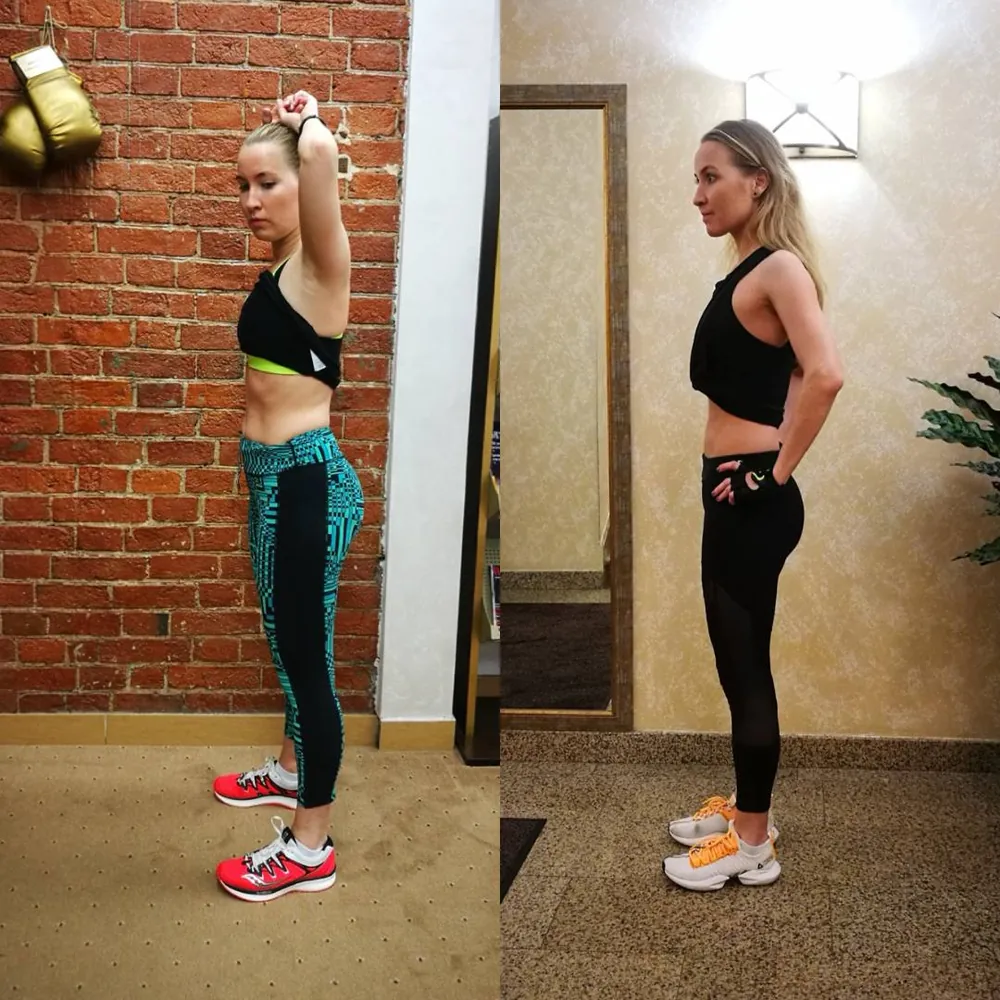

ДоПослеКейс 01 · Наталья, 39
Точка А
Переедает, есть лишний вес и отёчность. Жёсткий самоконтроль, не может расслабиться. Не любит тренироваться, заставляет себя.
Точка B
Подобрали тренировочную программу, которая не изнуряет, а даёт энергию и силы. Ушли отёчность и раздражительность. Нормализовалось питание. Наладилось отношение к себе.